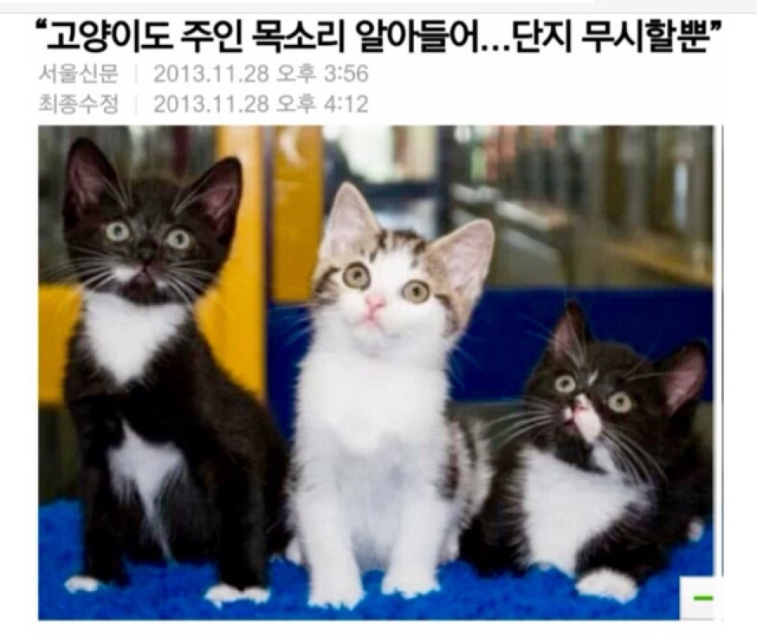

방학을 맞아 오랜만에 온가족이 함께 여행을 가게 되었다. 오랜 가족회의 끝에 결정난 여행지와 여행코스로 흥분되었는데, 바로 그 엄청난 여행지는 하.와.이.
인생에서 처음으로 하와이를 가게 된 우리 가족 모두 하와이는 여름 날씨라고 알고 있었기 때문에 여름바캉스를 떠올리며 여름처럼 입고 다닐거라며 옷을 가져 갔는데...해가 지면 추워서 긴옷들을 입고 다녔다. 낮에도 바람불면 개춥다.
감기 걸렸잖아...누가 덥다고 했냐?
누가 덥다고 했냐고
방학 때 모처럼 나는 나의 반려묘 '꼬망'녀석과 함께 서울본가로 가서 지내기로 했다. 꼬망이는 아직 1살도 안된 버르장머리 없는 고양이다. 꼬망이는 나의 친구이자 동생이자 아들같고 또 원수같다. 꼬망이의 특징은 말을 계속 안듣고 사고를 치다가 결국 내가 화가 나면 빠르게 도망간다는 것이다. 대체 왜 나를 저렇게 못살게 굴까? 그러다 문득 '아무리 내가 집사라고 하지만 저 정도면 거의 인간인데?'라는 생각이 들었다. 그리고 머지않아 충격적인 기사를 보게 되었는데...
ㅋ...
copyright©2019 한경대학교 정미소. 모든 권리 보유